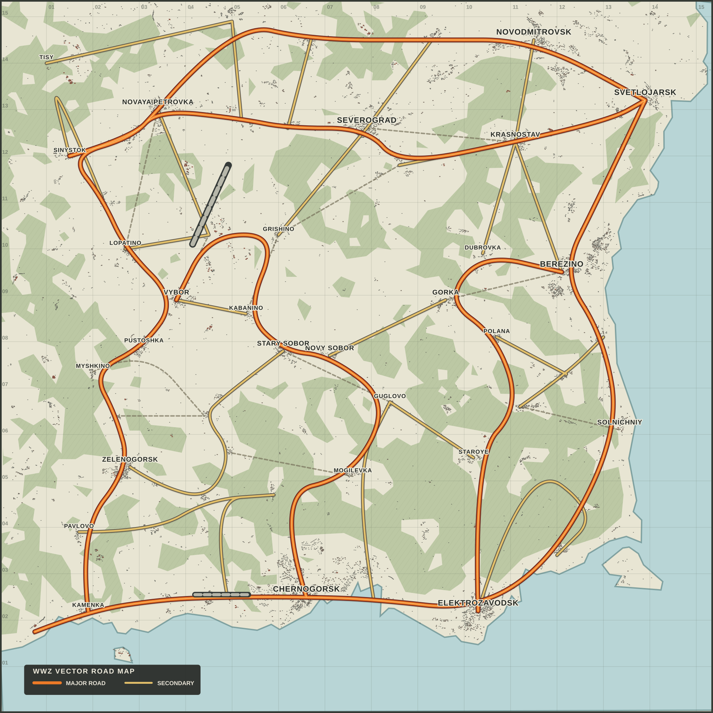

DayZ server
LoadingContacting the Railway API
Live server information and a secure path into your World War Z community account.
Contacting the Railway API
Live server population
Configured schedule
Discord connection required
Main server
Shortcuts
Demonstration feed
Development
Live public information supplied by the World War Z Bot on Railway.

ChernarusPlus
World War Z · PlayStation
Server details
Live operations
Server connection
Explore public landmarks and approved community points of interest on a custom vector map. Roads, labels and settlement footprints stay sharp while you drag, zoom and select markers for details.
Live players, private bases, Admin positions and unpublished events are never included. Owner POI editing will be added later through protected Railway endpoints with validation and audit history.
Search the current top-level bot commands by name, description or category.
No bot commands match your search.
Live, read-only wallet and economy statistics belonging only to the signed-in member.
Personal account required
Sign in to securely load your own verified wallet. Other members' account data is never returned by this page.
Use /account link in Discord with your exact PlayStation ID, then join the DayZ server to complete verification.
Live verified balance
Current shared prize
Current underworld heat
Consecutive claims
Lifetime ledger
Your ledger
No economy transactions have been recorded yet.
Live DayZ identity, activity and PvP statistics for the signed-in Discord member only.
Private member profile
Railway matches your verified Discord identity to your own PlayStation survivor record. The browser cannot choose another member ID.
Use /account link in Discord with your exact PlayStation ID, then join the DayZ server to finish the live verification.
Verified survivor
Offline · Linked —
Tracked from ADM sessions
Recorded server joins
0 kills · 0 deaths
0 flags captured
Survivor activity
PvP intelligence
Create, follow and respond to community support requests in one place.
Discord identity can be verified now. Open and resolved tickets will connect in a later stage.
How it will work
Protected player moderation, economy administration and server operations for verified Admins.
Railway rechecks your current Discord membership and Admin or Owner access before every player search, moderation action and server operation. All player changes require a recorded reason and an explicit confirmation for the selected player.
Stage 7B3A case management
Warnings, permanent bans and scheduled temporary bans remain attached to numbered cases. Railway processes due temporary unbans automatically.
No active moderation cases are recorded.
Moderation cases are temporarily unavailable. Use Refresh cases to try again.
PSN or Discord display name
No database-wide listings
Confirmation and audit required
Secure player lookup
Searches are limited to 15 matches. Search results never return raw Discord IDs, player database IDs, DayZ UIDs, positions or credentials. Protected details expose only the active warning and private-note references required for edit/remove controls, plus staff-only content and audit records.
No matching player records were found.
Player search is temporarily unavailable.
Protected player record
This PlayStation ID exists in the DayZ activity registry but is not linked to a verified Discord account. Linked profile, playtime and moderation data are unavailable.
Player identity
Offline · Unlinked
Tracked ADM sessions
Recorded joins
0 kills · 0 deaths
Current moderation count
Verified linked wallet
Stage 7B3A controls
Activity
PvP intelligence
Private staff record
No private staff notes have been added.
Active moderation
No active warnings are recorded.
Moderation history
No moderation records have been recorded for this linked account.
Nitrado enforcement
No DayZ ban actions have been recorded.
Permanent audit
No dashboard player actions have been recorded.
Admin operations
Protected audit
No Start, Stop or Restart actions have been recorded yet.
History is temporarily unavailable. Use Refresh history to try again.
Back up, validate, compare and restore DayZ configuration files safely.
Destructive actions will require a confirmation, permission check, fresh backup and permanent audit record.
Example history
| Backup | Created | Files | Validation | Action |
|---|---|---|---|---|
| Pre-update example | Today, 8:42 PM | 12 | Passed | |
| Scheduled example | Yesterday, 9:00 PM | 12 | Passed |
Example history only. No Nitrado files are present on this website.
Connection status, privacy information and answers about the dashboard.
Account
Discord sign-in securely verifies your World War Z membership and current access level.
Read the privacy informationAccess levels
Questions
Start, Stop and Restart are enabled only for a safe live server state. Player actions also depend on whether the selected record is linked, verified or currently banned. Unlinking is Owner-only. Ticket and configuration write actions remain locked until their own protected endpoints are completed.
Server status, population, map and platform are public and live. After sign-in, your Discord access, linked PlayStation profile, activity, PvP statistics, wallet and personal ledger are also live. Verified Admin player records, notes, warnings, balances and audit history are read directly from Railway's protected API.
Only a signed-in Admin or Owner can see them. Railway rechecks current Discord membership, permissions and the selected target after the confirmation prompt. Owner and self-target protections remain server-side, and every accepted or rejected request is audited.
The dedicated public map uses one locally hosted vector road map with pan, zoom, search, filters and read-only public markers. It stays sharp at every zoom and does not contact a third-party map service. Private or live operational locations are not published.